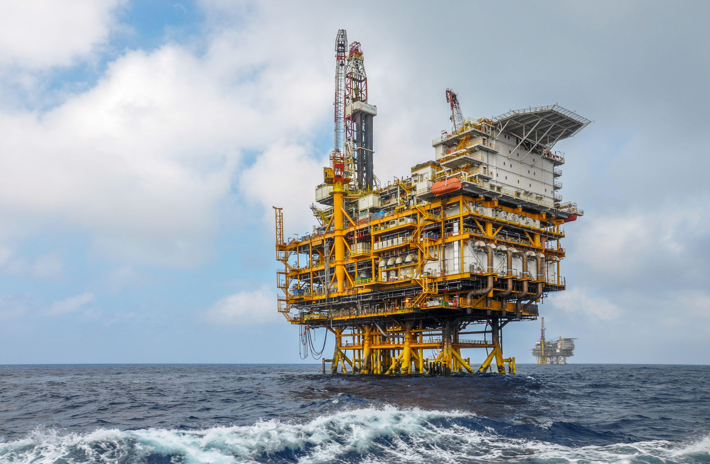

Working on an offshore platform is different from other jobs. A platform works continuously, needing a team every day and night.
The platform has a helideck for helicopter landings — this is how you get to work. You may be searched and breathalysed. No alcohol allowed.
Typically, you work two weeks for 12 hours/day, then two weeks' leave. You share a cabin on the alternating shift. Food is restaurant standard.
Pay is good with travel allowances and tax concessions. Jobs range from labourers to engineers. A crew of 150 is common. The platform is managed by the OIM (Oil Installation Manager).
The platform is supplied from an onshore base — by supply boat for regular supplies and helicopter for urgent material. Regular communication is maintained with the onshore base.
The work is often hard. You must be fit and healthy, follow instructions, and be reliable — especially regarding safety. You will receive regular safety training and be expected to work as a team.
Although competition for jobs is high, once you have experience there are opportunities to work in different parts of the world. Many workers use their shore leave for further education and training.

Record a short audio on WhatsApp reading one paragraph aloud. Your teacher gives pronunciation feedback.